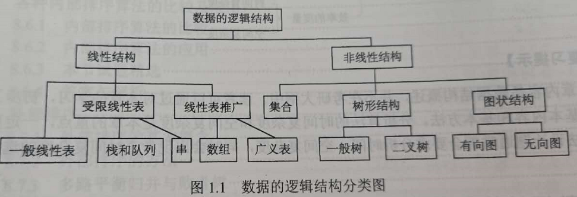

第1章 绪论
1.1 数据结构基本概念
1.1.1基本概念和术语
数据：信息的载体
数据元素：数据的基本单位
数据对象：具有相同性质的数据元素的集合
数据类型：一个值的集合和定义在此集合上的一组操作的总称：
- 原子类型：不可再分的数据类型
- 结构类型：可分解的数据类型
- 抽象数据类型：抽象数据组织与之相关的操作
数据结构：相互之间存在一种或多种特定关系的数据元素的结合
1.1.2 数据结构三要素
数据的逻辑结构
- 线性结构
- 非线性结构

集合：结构中的数据元素之间除“同属一个集合”外，别无其它关系
线性结构：结构中的数据元素之间只存在一对一的关系
树形结构：结构中的数据元素之间存在一对多的关系
图状结构或网状结构：结构中的数据元素之间存在多对多的关系
数据的存储结构，也称物理结构
- 顺序存储：逻辑相邻，物理相邻
- 链式存储：逻辑相邻，物理不一定相邻
- 索引存储：存储信息的同时建立附加的索引表
- 散列存储：哈希存储
数据的运算
数据的逻辑结构独立于其存储结构。
1.2 算法和算法评价
1.2.1 算法的基本概念
算法：对特定问题求解步骤的一种描述
算法的5个重要特性：
- 有穷性
- 确定性
- 可行性
- 输入
- 输出
好的算法的应考虑达到的目标：
- 正确性
- 可读性
- 健壮性
- 效率与低存储量需求
1.2.2 算法效率的度量
时间复杂度
一般总是考虑在最坏情况下的时间复杂度，保证算法的运行时间不会比它更长
$O(1) < O(log_2n) < O(n)<O(nlog_2n)<O(n^2)<O(n^3)< O(2^n) <O(n!)<O(n^n)$
空间复杂度
算法原地工作是指算法所需的辅助空间为常量，即O(1)
同一个算法，实现语言的级别越高，执行效率越低
判断时间复杂度：
- 循环主体中的变量参与循环条件判断：代入条件进行计算
- 循环主体中的变量与循环条件无关：
- 递归程序：公式递推
- 非递归程序：累计次数